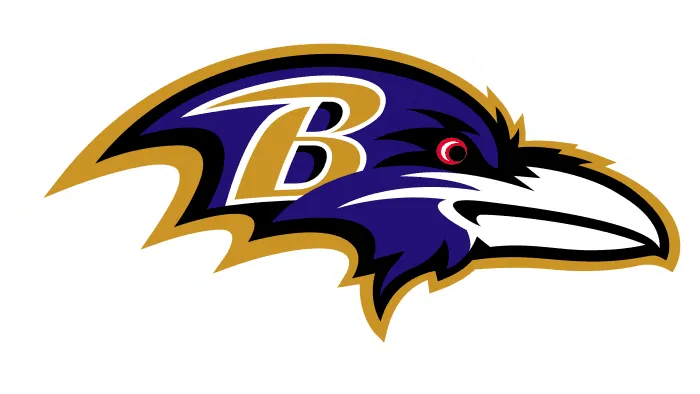

Here are some of the top quarterbacks in the AFC North for your fantasy football team:
| Rank | Player | Team | Bye Week | Pass Yards | Pass td | Int's | Rushing Yards | Rushing Td's | FTPS |
|---|---|---|---|---|---|---|---|---|---|
| 1 | Lamar Jackson | Ravens | 14 | 4172 | 41 | 4 | 915 | 4 | 430.38 |
| 2 | Joe Burrow | Bengals | 12 | 4,918 | 43 | 9 | 201 | 2 | 372.82 |
| 3 | Aaron Rodgers | Pittsburgh | 9 | 3897 | 28 | 11 | 107 | 0 | 256.58 |
| 4 | Joe Flacco | Browns | 10 | 1761 | 12 | 7 | 26 | 0 | 99.04 |
